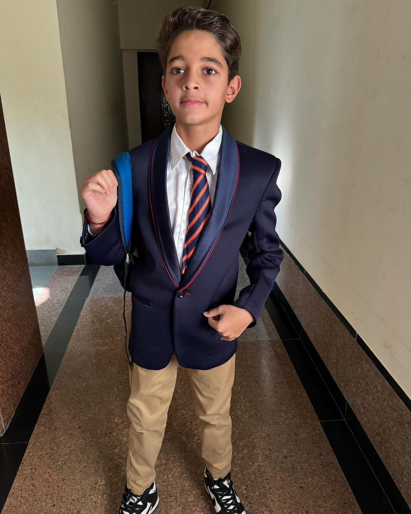
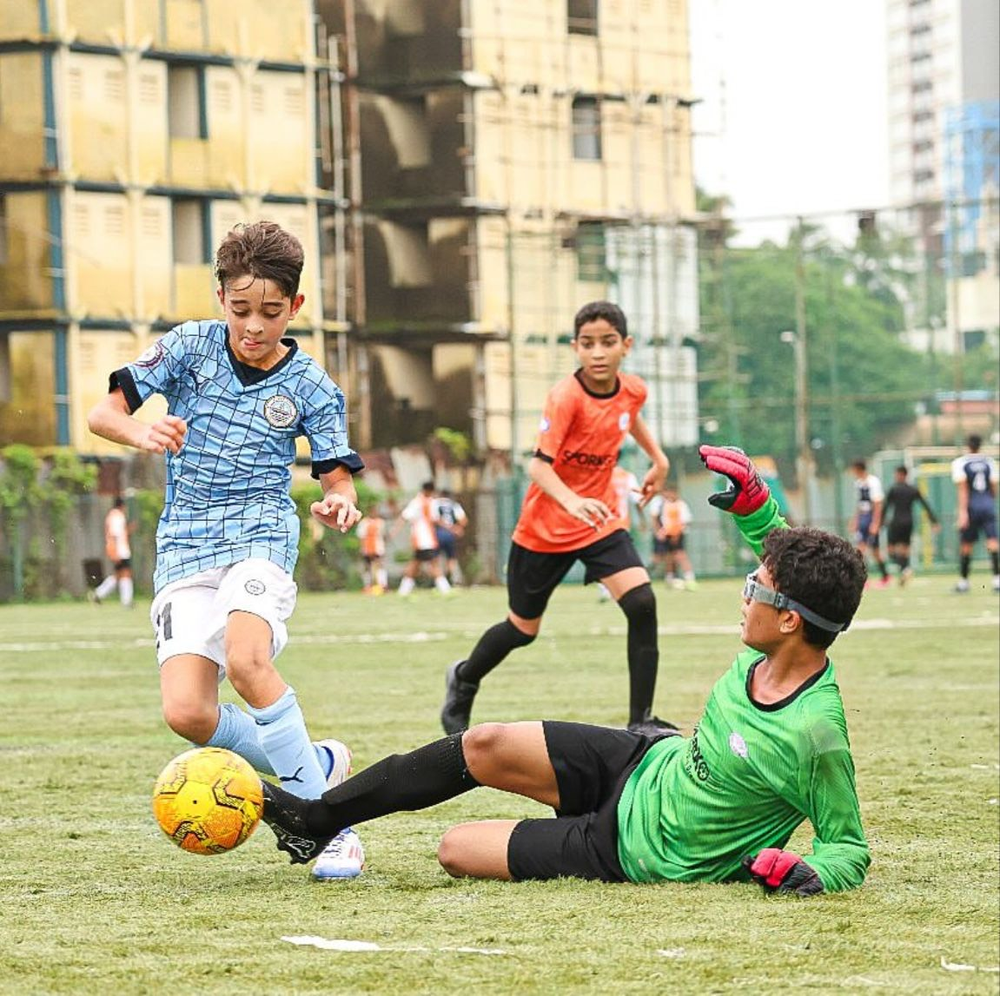

Hello! My name is Kai Sharma Saluja. I'm a 13 year old boy who goes to the Bombay International School. I love playing Football. Not trying to flex but I have a 63 day streak on duolingo learning. If you need to contact me my email is kai.2574@bis.edu.in Adios!
My family, I have a 15 year old brother named Zen. My mother's name is Tara and my father's name is Roopak. My grandmother who I call Gaaga lives on the ground floor in my building and I live on the fifth floor. I have a goated labrador named Tia.
Interests
I have many interests but my main interest is football. I play for a club called Mumbai City FC. I play football everyday. Whether it is my club's training, school training, in school, with my friends or in my building. I love it. I don't only love playing football but I also love to watch it aswell and playa football video game that Ananda and Dev are addicted to called EA FC 24. My favourite clubs in their respective leagues are Chelsea, FC Barcelona, Marseille, AC Milan, Dortmund and Mumbai City FC. My favourite national team is England. My favourite players are Messi and COLD Palmer. Some other things that I loved to do are....... play other video games like Fortnite, Shell Shockers and Brawl Stars, play sports, Watch Young Sheldon, Chat with my friends.  